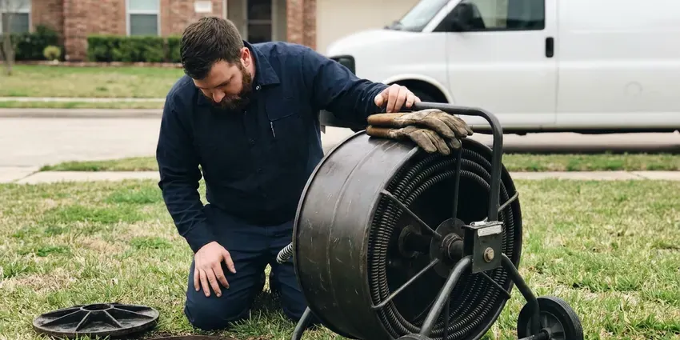

Water Line Repair in Racine, WI
Keep your plumbing flowing well with professional water line repair from HKV Plumbing in Racine, WI.
- Upfront Pricing
- Upfront quotes
- Trenchless Options Offered
- Upfront Written Quotes

Broken Water Line? We Dig Smart and Fix It Right in Racine, WI.
Don't let a leaky water line cause bigger problems for your home or business, call us today.
Water Line Repair in Racine, WI Done Right the First Time
HKV Plumbing focuses on complete water line repair services across Racine, WI. We understand the trouble that Wisconsin soil conditions and tree roots can pose to underground plumbing, leading to common issues like leaks or bursts.
Our expertise includes:
- Pressure regulator and main shutoff valve replacement during repairs
- Long-lasting pipe material replacements
- Acoustic and tracer gas leak detection on buried mains

Additional Plumbing Maintenance Services in Racine, WI
Our maintenance and specialty plumbing services in Racine, WI catch small problems before they become emergencies.


Customers
Why Choose HKV Plumbing for Water Line Repair in Racine, WI?
A leaking water line wastes hundreds of gallons, undermines walkways and can soften the soil under your slab. We find the problem precisely, explain your options and repair it without turning your yard into a trench.
- Quality Parts, We only install quality, code-compliant pipes and fittings for long-lasting water line repairs.
- Clear Pricing, You approve a written quote before we open the ground.
- Precise Locating, Ground microphones and line tracers let us dig one hole instead of several.
Citywide Coverage
Whether your meter sits at the curb, in an alley or behind a block wall, we can reach it. We serve homes, rentals and small commercial buildings throughout Racine and the surrounding area.
Experienced Team
Every water line job is led by a licensed plumber who has handled hundreds of main breaks. They can tell a meter-side leak from a house-side leak fast and explain who is responsible for each.
Safety-First Approach
We make sure every water line repair meets high safety standards and complies with all municipal codes in Racine, WI. Our commitment to proper procedures means a safe and reliable repair every time.
Trusted Certified Racine Plumbing Services Professionals
At HKV Plumbing, we take pride in providing certified plumbing services throughout Racine, WI. Backed by recognized industry credentials, our experienced plumbers combine technical skill with genuine customer care. Whether it is repair, installation, or maintenance, we follow strict safety and quality standards to deliver long-lasting results you can trust.
Call Us Now PHCC Plumbing Contractor Recognition
PHCC Plumbing Contractor Recognition Better Business Bureau (BBB) Accreditation
Better Business Bureau (BBB) Accreditation Angi Certified Pro
Angi Certified Pro ISO 9001 Quality Management Certification
ISO 9001 Quality Management CertificationDependable Water Line Repair Services in Racine, WI
Underground Water Line Leak Repair in Racine
Underground water line leaks are often hard to detect until serious damage has occurred. Common signs include sudden spikes in your water bill, damp spots in your yard, or a clear drop in water pressure. Our team uses acoustic leak detection and ground-penetrating radar to precisely locate these hidden leaks in Racine, reducing the need for extensive excavation. We repair breaks caused by shifting soil, tree root intrusion, or aging pipes, restoring your water service quickly.

Galvanized Water Line Replacement in Racine, WI
Many homes built before the 1970s still have galvanized steel service lines that rust from the inside. Private wells serve a large number of rural homes, and some Wisconsin well water carries iron, nitrates or bacteria that call for regular testing. Hard water speeds up scale buildup, which restricts flow and causes rust-colored water. Patching galvanized pipe rarely lasts because the surrounding pipe is just as corroded. We usually recommend replacing the full run from meter to house with copper or PEX, which restores pressure and stops repeat leaks.
Main Water Line Leak Repair in Racine
Most main line leaks show up as a soggy strip of yard, a sudden jump in your water bill or a meter dial that moves with every fixture off. We confirm the leak by isolating the house shutoff and watching the meter. Then we use ground microphones to locate the exact spot. A single section is cut out and replaced with repair couplings or a new length of pipe, and the line is pressure tested before backfill.
Main Water Line Replacement in Racine, WI
When repairs are no longer cost-effective due to extensive damage or repeat issues, a full main water line replacement may be necessary. This often applies to older homes in Racine, WI with original galvanized steel or polybutylene pipes that are prone to corrosion and leaks. We offer full replacement services, upgrading your system with durable, modern materials like PEX or copper for a reliable water supply for decades to come. We handle all necessary permits and inspections.
Emergency Water Line Repair in Racine, WI
A burst water line is a true emergency, which can cause extensive water damage and make your home unlivable. HKV Plumbing offers fast-response emergency water line repair services across Racine, WI. Our plumbers are equipped to handle sudden breaks, providing immediate shut-off and repair to prevent further damage. Feel free to call us anytime, day or night, if you suspect a major water line failure. Fast action is essential to limit the impact of a severe leak.
Slab Leak Water Line Repair in Racine
Slab leaks, where water lines running beneath your home's concrete foundation leak, are a especially challenging issue. Some older neighborhoods still have lead service lines, and many communities are working to remove them over time. These leaks can undermine your foundation, leading to major structural damage. We use specialized listening devices and camera inspections to pinpoint slab leaks precisely and offer repair options including direct slab penetration, re-routing, or pipe lining. Addressing a slab leak promptly in Racine is crucial to prevent extensive, costly foundation damage.
Emergency Water Line Break Repair in Racine, WI
A full break can flood a yard, wash out soil under walkways and leave your home without water. Our emergency crews shut off the supply, find the break and set up a temporary bypass when the repair will take more than a few hours. Most emergency breaks are repaired the same day. We also document the damage with photos for your insurance or HOA.

PEX and Copper Water Line Repair in Racine
Whether your home has modern PEX piping or traditional copper lines, our technicians are experienced in repairing both. PEX offers flexibility and corrosion resistance, while copper is known for its durability. We carry a full stock of appropriate fittings and tools for each material, ensuring a proper, code-compliant repair. Our experience extends to identifying common failure points for each type, such as fitting issues with PEX or pinhole leaks in older copper lines, common in homes with harder water.
Water Line Repairs Near Me in Racine, WI
We know how local water providers set up meters, curb stops and service connections. That local knowledge helps us identify whose side of the meter the leak is on right away. It also makes permit and inspection steps faster when a full replacement is needed.
When you search for water line repair close to home, you want a plumber who can be at your meter today. Our technicians are based locally and run well-stocked trucks throughout Racine. That means faster arrival and fewer delays waiting on parts.
HKV Plumbing at a Glance
- Licensed and insured plumbers serving Racine, WI
- 24/7 emergency service with same-day scheduling
- Clear written estimates, no hidden fees
- 4.8-star rated by 448+ Wisconsin customers
Racine Map
Racine Information
- Population
- 76,602
- Area codes
- 262/414/920
- Service area
- Racine and communities within 40 miles
- Nearby
- Kenosha, West Allis, Milwaukee, Wauwatosa
For homes in Racine, WI, soil movement and changing weather can place real stress on underground water lines, making solid and expertly performed repairs essential for long-term reliability.
Expert Services
Trust our professionals for reliable HKV Plumbing solutions in Racine, WI.
Our Specialized Plumbing Services in Racine, WI
At HKV Plumbing, we provide a complete range of plumbing services across Racine, WI. From leak detection to full system installations, our team ensures fast, precise, and affordable service for both residential and commercial properties. Explore our core services below:


How Our Water Line Repair Process Works in Racine, WI
We follow a tested method to accurately diagnose and efficiently repair your water line issues, from the first call to the final check.
Request a Quote
Contact HKV Plumbing at (414) 432-4641 to describe your water line issue. We'll gather the necessary information and schedule an inspection at your convenience.
Diagnosis & Plan
Our expert technician will arrive to perform a thorough diagnostic, pinpointing the exact location and cause of the water line problem. We'll then present you with a clear repair plan and upfront pricing.
Expert Repair
Once you approve, our team will proceed with the repair using high-quality materials and proven techniques. We work efficiently to restore your water service with little disruption.
Frequently Asked Questions About Water Line Repair in Racine
The cost of water line repair in Racine, WI can vary widely, typically ranging from $500 for a minor leak repair to $5,000 or more for a full main line replacement or complex trenchless work. Factors include the location of the leak, the type of pipe, the extent of damage, and whether excavation is required. We provide a clear, upfront estimate after a thorough inspection.
The duration of a water line repair depends on the severity and type of repair. A simple spot repair might take a few hours, while a more extensive replacement, especially if it involves excavation or trenchless methods, could take one to three days. We always strive to complete the work efficiently while maintaining high quality.
While some very minor, accessible leaks might seem DIY-friendly, we strongly advise against attempting water line repairs yourself, especially for underground or main lines. Improper repairs can lead to greater damage, code violations, and costly future problems. Professional plumbers have the specialized tools, experience, and knowledge of Wisconsin plumbing codes to deliver a safe and lasting repair.
Yes, HKV Plumbing stands behind the quality of our work. We offer a full warranty on all our water line repairs, covering both parts and labor. The specifics of the warranty will be clearly outlined in your service agreement, giving you peace of mind that your investment is protected. We are committed to providing long-term solutions for our Racine customers.
Trenchless water line repair is a method of repairing or replacing underground pipes without extensive digging. It involves creating small access points and using specialized equipment to either pull a new pipe through the old one (pipe bursting) or insert a new lining into the existing pipe (pipe lining). This method saves landscaping and reduces repair time.
Common signs of a broken water line include surprisingly high water bills, a sudden drop in water pressure, wet spots in your yard or on pavement that don't dry, discolored water, or the sound of running water when no fixtures are in use. For homes on slab foundations, watch for cracks in the foundation or warm spots on the floor.
Private wells serve a large number of rural homes, and some Wisconsin well water carries iron, nitrates or bacteria that require regular testing. Glacial soils in Wisconsin range from heavy clay to sand and gravel, which affects how water moves around foundations and buried lines. Tree roots can also crush or wrap shallow lines, and mineral scale chokes older pipe over time. Aging galvanized pipe is the most common cause in older homes.
For water line replacements, we primarily use durable and code-compliant materials such as PEX (cross-linked polyethylene) and copper. PEX is flexible and resistant to freezing, while copper offers excellent longevity and corrosion resistance. The best material for your home in Racine will depend on your particular needs, budget, and local regulations.
What People Are Saying About Our Plumbing Experts?

Laura S.
I scheduled a water heater replacement, and the team made the process smooth and affordable. The new unit works perfectly, and they cleaned up after completing the job.
Water Heater Replacement · Racine, WI
Mark T.
When our office needed drain cleaning, HKV Plumbing provided quick, reliable service. The plumber arrived on time and made sure every drain flowed perfectly before leaving. Very satisfied.
Drain Cleaning · West Allis, WI
Robert G.
The trenchless sewer replacement saved our front yard. They walked us through the camera inspection footage first so we knew exactly what we were paying for.
Sewer Line Replacement · West Allis, WIJames P.
Our commercial plumbing system had a leak under the sink, and HKV Plumbing handled it professionally. The plumbers arrived quickly and restored everything without disruption to our customers.
Commercial Plumbing · Kenosha, WI
Daniel K.
A pipe burst at 11 pm and they actually answered. The plumber showed up within the hour, shut everything down, and had us back to normal the next morning. Could not ask for more.
Emergency Plumbing · Janesville, WI
Emily R.
I called HKV Plumbing for plumbing repair, and the technician was fast, polite, and thorough. They explained the problem clearly and fixed it the same day. I will definitely hire them again. Highly recommended!
Plumbing Repair · Wauwatosa, WI